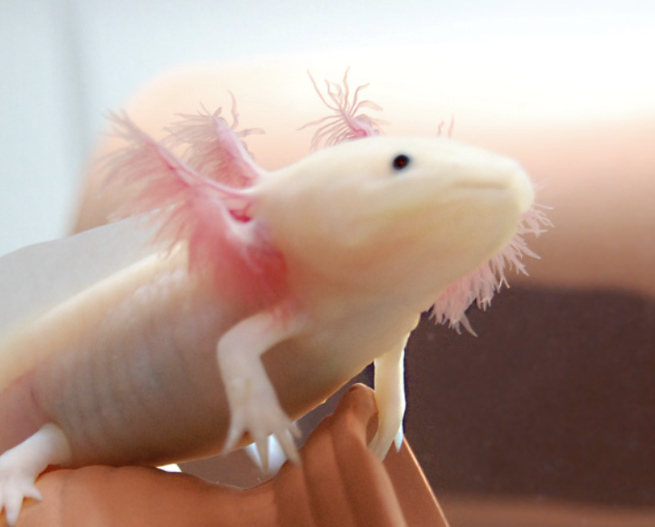
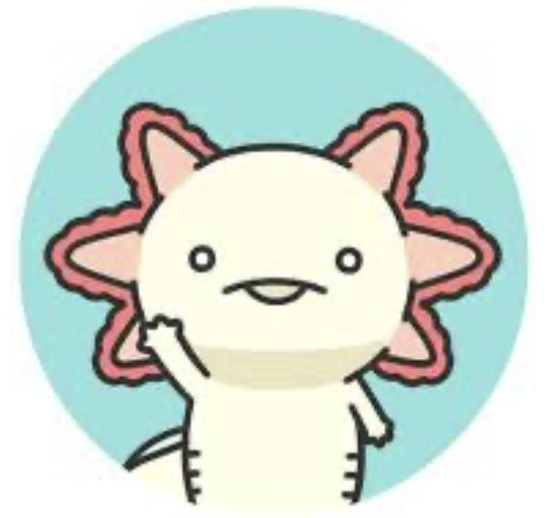
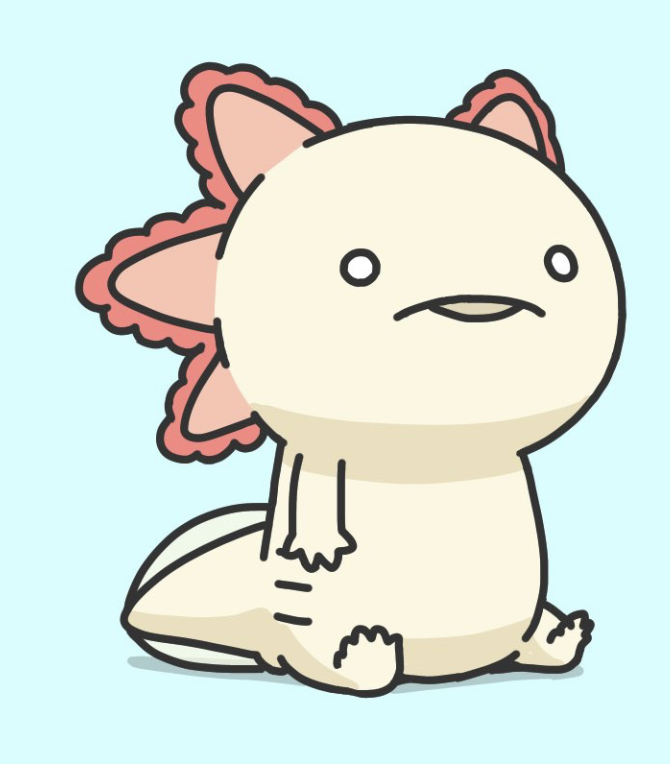

ウーパールーパーの飼育方法
2026年6月7日
ウーパールーパーを飼育する際の重要なポイントを紹介します。 水温は18～24℃が最適で、水の汚れに敏感です。


ウパ教はウーパールーパーを愛する団体です。私たちはウーパールーパーの魅力を広め、 飼育方法や生態について情報を共有しています。このサイトの下部にはウーパールーパー情報が二週間おきに更新されます。
ウーパールーパーは不思議で可愛い生き物です。水中での優雅な動きと、 ユニークな笑顔が特徴です。一緒にウーパールーパーの魅力を発見しましょう！

2026年6月7日
ウーパールーパーを飼育する際の重要なポイントを紹介します。 水温は18～24℃が最適で、水の汚れに敏感です。
2026年6月7日
ウーパールーパーの原産地は、中南米にあるメキシコ（メキシコシティのソチミルコ湖およびチャルコ湖周辺）です。和名は「メキシコサラマンダー」や「メキシコサンショウウオ」で、現地ではアホロートルとも呼ばれています。
2026年6月7日
ウーパールーパー（メキシコサラマンダー）は、傷口の細胞が赤ちゃんの状態（未分化な状態）へ戻り、失われた組織を正確に復元する驚異的な「完全再生能力」を持っています